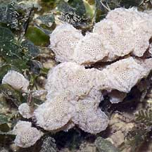
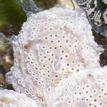
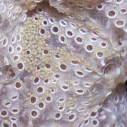
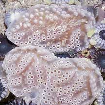
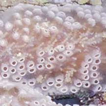
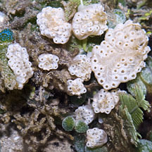
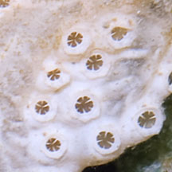

|
|
| ascidians text index | photo index |
| Phylum Chordata | Subphylum Tunicata/Urochordata | Class Ascidiacea |
| White
ascidians awaiting identification* updated Feb 2020 Where seen? These white blobs are sometimes seen on some of our shores. On coral rubble or seagrasses and seaweeds. Features: Irregular blobs 2-5cm across. Usually white or pinkish. Smooth and slippery looking when out of water. When submerged, tiny regularly-spaced holes can be seen. Some slightly larger holes have short transparent cones with white stripes. |
 Chek Jawa, May 05 |
 Some slightly larger holes have transparent cones with white stripes. |
 |
 Chek Jawa, Jun 05  |
 Chek Jawa, Aug 05  |
 Pulau Semakau, Aug 11  |
*Species are difficult to positively identify without examination of internal parts.
On this website, they are grouped by external features for convenience of display.
| White ascidians on Singapore shores |
On wildsingapore
flickr
|
| Other sightings on Singapore shores |